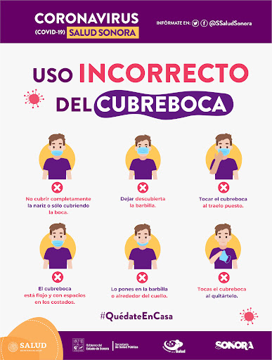
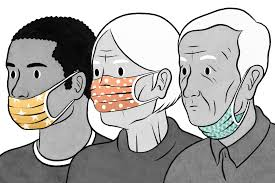
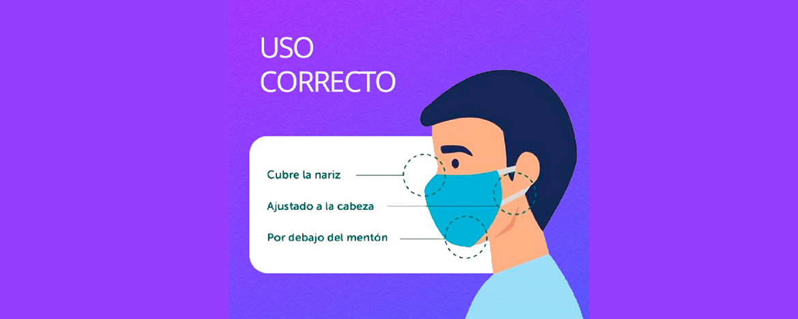

La consecuencia de este problema es quedar contagiado de covid-19, la gente no toma conciencia de lo que estamos viviendo. El problema elegido es el "Mal uso del Barbijo “Las causas que generan ese problema es colocarse el barbijo mal o no usarlo, nosotros podemos parar esto, pero tenemos que ser más conscientes de todo esto.
El proyecto está realizado por el estudiante Ronald Alejandro Lunario Canaza de la U. E. Técnico Humanístico Nacional Presidente “Germán Busch”
Distracción, falta de campañas de impacto que indiquen cómo deben usarse, cansancio, negación de la pandemia, desconocimiento. Son muchas las razones por las cuáles las personas, en la medida que la pandemia fue avanzando, dejaron de usar el barbijo o se lo colocan en forma incorrecta exponiéndose y exponiendo a otros al contagio del Sars Cov 2. Ante una nueva ola de contagios, es imprescindible recordar la importancia de usar tapabocas y hacerlo exactamente como se debe. Hasta tanto aparezca la aurora de un día mejor dada por la vacunación contra el Covid-19, en la mayor parte de la población mundial, deberemos seguir apelando a que el compromiso colectivo nos permite alejarnos los más posible del virus debiendo continuar con la práctica del uso de barbijos, distanciamiento social y frecuente lavado de manos. Medidas fuertemente y mundialmente recomendadas por autoridades en salud y que a veces parecen costarnos a todos.
Este proyecto se está realizando en Yacuiba-Tarija-Bolivia en mi domicilio y en la U. E. Técnico Humanístico Nacional Presidente “Germán Busch” que están ubicado C/Hugo Salazar Esq.Camiri B. Las Delicias-Yacuiba y C.René Moreno Esq.Colón
Este proyecto va destinado a esas personas que usan de manera errónea el barbijo descuidando su salud y atentando la salud de las demás personas por eso llamarles a la reflexión miles de personas con este virus murieron y aún así hay persona que no creen de su existencia lo llaman una farsa creado por sus gobiernos políticos por eso dejemos de usar de manera errónea el barbijo cuidemos a nuestros seres queridos evitemos cualquier tipo de problema que pueda afectar nuestra salud.
Les mostrare como debemos usar de manera correcta el barbijo y que podemos evitar haciéndolo
Que podemos ganar nosotros haciendo todo esto o que podemos evitar; evitaremos congios a las otras personas y también evitaremos no contagiarnos del virus para así enseñar a nuestra sociedad sobre los cuidados de la salud contra el covid-19
